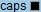

Présentation de la fonction
Avec la console virtuelle à distance Java, vous pouvez accéder à un serveur et le gérer à distance, installer ou réparer le système d'exploitation et installer les pilotes sur le serveur.
Avec la console à distance intégrée :
- Vous pouvez utiliser le clavier et la souris du PC local pour gérer le serveur à distance.
- Vous pouvez permettre au serveur d'accéder à distance au PC local via un réseau en utilisant un lecteur de disque virtuel (FDD) ou un lecteur DVD-ROM. Pour le serveur, l'utilisation du lecteur de disque virtuel (FDD) ou du lecteur DVD-ROM est la même que celle de l'utilisateur d'un périphérique USB physique.
Tableau 1 décrit les icônes sur l'écran KVM.
Icône |
Description |
|---|---|
|
Verrouille la barre d'outils. |
|
Masque la barre d'outils. |
|
Affiche le bureau du serveur en mode plein écran. REMARQUE:
|
|
Synchronise l'emplacement de la souris. REMARQUE:
Ce bouton n'est disponible qu'après avoir cliqué sur Changer le mode de la souris lorsque le bureau du serveur est affiché en plein écran et que le Contrôle de la souris est Souris unique. |
|
Change le mode de la souris. REMARQUE:
Ce bouton n'est disponible que lorsque le bureau du serveur est affiché en plein écran et que le Contrôle de la souris est Souris unique. |
|
Retourne sur le bureau du serveur en mode fenêtré. REMARQUE:
Ce bouton est disponible dans la barre d'outils uniquement lorsque le bureau du serveur est affiché en mode plein écran. |
|
Affiche le menu de contrôle de l'alimentation, qui comprend les éléments suivants :
|
|
Enregistre une vidéo pour les opérations effectuées sur le serveur. REMARQUE:
Une fois que la fonction d'enregistrement vidéo est activée, des informations de service sensibles peuvent être capturées pendant l'enregistrement vidéo. |
|
Contrôle la souris du serveur. Les opérations de contrôle comprennent ce qui suit :
Paramètres par défaut : Accélération de la souris REMARQUE:
|
|
Sélectionne et utilise un lecteur de DVD-ROM virtuel.
REMARQUE:
Le lecteur DVD-ROM virtuel et le FDD virtuel sont des périphériques composés. Lorsqu'un lecteur DVD-ROM virtuel est connecté au serveur, le serveur identifie également un FDD virtuel sans support. Vous pouvez utiliser le FDD virtuel en suivant la procédure normale. |
|
Sélectionne et utilise un lecteur de disquette virtuel.
REMARQUE:
Le lecteur DVD-ROM virtuel et le FDD virtuel sont des périphériques composés. Lorsqu'un FDD virtuel est connecté au serveur, le serveur identifie également un lecteur DVD-ROM virtuel sans support. Vous pouvez utiliser le lecteur DVD-ROM virtuel en suivant la procédure normale. |
|
Utilise un lecteur de CD/DVD ou un lecteur de disquette pour créer un fichier image. |
|
Envoyer ou personnaliser les touches de combinaison. Les touches de combinaison sont décrites comme suit :
REMARQUE:
Les touches de combinaison et leurs fonctions varient selon le système d'exploitation. Les touches de combinaison et leurs fonctions décrites ici ne concernent que Windows. |
|
Personnalise le clavier client. Par défaut, BMC sélectionne automatiquement le type de clavier client à utiliser. Si le clavier sélectionné automatiquement ne fonctionne pas bien, vous pouvez spécifier manuellement le type de clavier.
|
Clarté de l'image |
Ajuste la clarté de l'image du bureau du serveur. |
|
Indique l'état de la touche Num Lock sur le serveur. |
 |
Indique l'état de la touche Caps Lock sur le serveur. |
|
Indique l'état de la touche Scroll Lock sur le serveur. Si vous appuyez sur Ctrl+S par erreur après être entré en mode caractères Linux, l'écran est verrouillé. Appuyez sur Scroll Lock pour déverrouiller l'écran. REMARQUE:
|
|
Affiche les informations d'aide. |
Remarque : Les icônes sur l'écran de la Console virtuelle à distance et leurs fonctions varient en fonction du modèle de serveur. |
|


GUI
Choisissez Console à distance dans le menu principal, puis cliquez sur Console à distance avec Java intégrée (privée) ou Console à distance avec Java intégrée (partagée).
L'écran KVM est affiché.

Si vous cliquez sur Console à distance avec Java intégrée (partagée), deux utilisateurs sont autorisés à accéder et à effectuer simultanément des opérations sur le serveur. Chaque utilisateur peut visualiser les opérations effectuées par l'autre utilisateur, ce qui entraîne des risques de sécurité.
Tableau 2 décrit les zones.
Zone |
Fonction |
|---|---|
Barre de titre |
La barre de titre en haut de l'écran KVM affiche l'adresse IP de le BMC et le numéro de série du serveur. |
Barre d'outils (en haut) |
Les icônes de la barre d'outils permettent de gérer le serveur à distance. |
Bureau serveur (au milieu) |
Vous pouvez utiliser la souris et le clavier sur votre PC local pour gérer le serveur en temps réel. |
Barre d'état (en bas) |
Affiche en temps réel des astuces pour le bureau du serveur et des données sur la communication entre le serveur et le PC local. |
Procédure
Envoi d'une touche de combinaison
- Sur l'écran KVM, cliquez sur
 dans la barre d'outils.
dans la barre d'outils.La boîte de dialogue des touches de combinaison s'affiche.
- Cliquez sur une touche de combinaison.
Le serveur exécute l'opération définie pour la touche de combinaison.
Si vous souhaitez personnaliser une touche de combinaison, saisissez les touches dans la zone de texte à côté de Personnaliser et cliquez sur Envoyer.
Spécification du clavier client
Sur l'écran KVM, cliquez sur  dans la barre d'outils et sélectionnez le clavier à utiliser.
dans la barre d'outils et sélectionnez le clavier à utiliser.
Montage d'un lecteur de CD/DVD
Montez le lecteur de DVD-ROM sur le PC local et puis sur le serveur.
- Sur l'écran KVM, cliquez sur
 dans la barre d'outils.
dans la barre d'outils.
- Sélectionnez CD/DVD.
- Sélectionnez la lettre du lecteur de DVD-ROM sur le PC local dans la liste déroulante, par exemple, G :.
- Cliquez sur Connecter.
Le lecteur de CD/DVD sur le PC local est monté sur le serveur.
Pour démonter le lecteur de DVD-ROM, cliquez sur Déconnecter. Ensuite, cliquez sur Oui dans la boîte de dialogue Confirmer affichée.
Chargement d'un fichier image à partir du PC local via le lecteur de CD/DVD virtuel
Montez le lecteur de CD/DVD sur le PC local et chargez un fichier image du PC local sur le serveur.
- Sur l'écran KVM, cliquez sur dans la barre d'outils.
- Sélectionnez Fichier image.
- Cliquez sur Parcourir.
La boîte de dialogue Ouvrir s'affiche.
- Sélectionnez le fichier image sur le PC local, puis cliquez sur Ouvrir.
- Cliquez sur Connecter.
Le lecteur de CD/DVD virtuel est correctement monté sur le serveur et le fichier image est chargé avec succès.
- Pour charger un autre fichier image, cliquez sur Éjecter pour éjecter le fichier image DVD existant, sélectionnez le nouveau fichier image DVD et cliquez sur Insérer.
- Pour démonter le lecteur de CD/DVD virtuel, cliquez sur Déconnecter. Ensuite, cliquez sur Oui dans la boîte de dialogue Confirmer.
Montage d'un lecteur de disquette virtuel
Montez le lecteur de disquette sur le PC local sur le serveur.
- Sur l'écran KVM, cliquez sur dans la barre d'outils.
- Sélectionnez Disquette.
- Sélectionnez la lettre de lecteur du lecteur de disquette sur le PC local dans la liste déroulante, par exemple, A : .
- Cochez la case Protéger en écriture.
Protéger en écriture est un mécanisme qui empêche l'altération ou l'effacement de données importantes. Si l'option Protéger en écriture est sélectionnée, les données ne peuvent pas être écrites sur le lecteur de disquette spécifié.
- Cliquez sur Connecter.
Le lecteur de disquette est monté sur le serveur.
Pour démonter le lecteur de disquette, cliquez sur Déconnecter. Ensuite, cliquez sur Oui dans la boîte de dialogue Confirmer.
Charger un fichier image à partir du PC local via le FDD virtuel
Montez le FDD du PC local et chargez un fichier image du PC local sur le serveur.
La taille du fichier image à monter doit être de 1,44 Mo. Dans le cas contraire, le fichier image ne sera pas monté.
- Sur l'écran KVM, cliquez sur dans la barre d'outils.
- Sélectionnez Fichier image.
- Cliquez sur Parcourir.
La boîte de dialogue Ouvrir s'affiche.
- Sélectionnez le fichier image sur le PC local, puis cliquez sur Ouvrir.
- Cliquez sur Connecter.
Le fichier image est chargé avec succès sur le serveur.
- Pour charger un autre fichier image, cliquez sur Éjecter pour éjecter le fichier FDD virtuel existant, sélectionnez le nouveau fichier image et cliquez sur Insérer.
- Pour démonter le FDD virtuel, cliquez sur Déconnecter. Ensuite, cliquez sur Oui dans la boîte de dialogue Confirmer.
Création d'un fichier image
Créez un fichier image à l'aide de la disquette du lecteur de disquette ou du lecteur de CD/DVD du lecteur de CD/DVD du PC local. Le fichier image créé est stocké sur le PC local.
Avant d'effectuer cette opération, assurez-vous qu'une disquette a été insérée dans le lecteur de disquette ou qu'un lecteur de CD/DVD a été inséré dans le lecteur de CD/DVD du PC local.
- Sur l'écran KVM, cliquez sur
 dans la barre d'outils.
dans la barre d'outils.
- Dans la liste déroulante Pilote, sélectionnez la lettre de lecteur du lecteur FDD ou DVD-ROM sur le PC local.
- Cliquez sur Parcourir. La boîte de dialogue Sauvegarder s'affiche.
- Spécifiez un répertoire pour enregistrer le fichier image et saisissez le nom du fichier dans la zone de texte Nom du fichier.
Vous ne pouvez créer que des fichiers image*.iso à l'aide du lecteur de CD/DVD et des fichiers image *.img à l'aide du lecteur de disquette.
- Cliquez sur Sauvegarder.
- Cliquez sur Faire.
Avancement indique la progression de la création du fichier image.
Pour arrêter de créer un fichier image, cliquez sur Arrêter.
Montage d'un répertoire virtuel
Montez les répertoires sur le PC local sur le serveur afin que le serveur puisse accéder aux répertoires locaux en mode lecture seule.

Avant de monter un répertoire, copiez les fichiers requis dans le répertoire. Une fois que le répertoire est monté, vous ne pouvez pas ajouter de fichiers dans le répertoire ni en supprimer.
- Sur l'écran KVM, cliquez sur dans la barre d'outils.
- Cliquez sur le bouton d'option Répertoire.
- Cliquez sur Parcourir.
La boîte de dialogue permettant de sélectionner un répertoire local s'affiche.
- Sélectionnez le répertoire et cliquez sur Ouvrir.
- Cliquez sur Connecter.
- Si la connexion est réussie, le répertoire virtuel est affiché dans la liste des systèmes d'exploitation du serveur. Vous pouvez copier des fichiers à partir de ce répertoire.
- Pour démonter le répertoire virtuel, cliquez sur Déconnecter.
Mise sous tension du serveur
- Sur l'écran KVM, cliquez sur dans la barre d'outils et choisissez Mise sous tension dans le menu.
La boîte de dialogue Confirmer s'affiche.
- Cliquez sur Oui.
Puis, le serveur est sous tension.
L'heure de mise sous tension du serveur varie en fonction de la configuration du serveur.
Mise hors tension du serveur
- Avant de mettre le serveur hors tension, assurez-vous que tous les services sont éteints.
- Sélectionnez un mode de mise hors tension en fonction de vos besoins. Pour plus de détails sur la différence entre les modes de mise hors tension, voir dans le Guide de l'utilisateur BMC.
- Sur l'écran KVM, cliquez sur dans la barre d'outils et choisissez Mise hors tension dans le menu.
La boîte de dialogue Confirmer s'affiche.
- Cliquez sur Oui.
Puis, le serveur est hors tension.
Réinitialisation forcée ou mise hors tension
- Une réinitialisation forcée ou un cycle d'alimentation peut endommager les programmes utilisateur ou les données non enregistrées.
- Avant de réinitialiser de force le système ou de passer au cycle d'alimentation du serveur de manière forcée, assurez-vous qu'aucun risque de service n'existe.
- Sélectionnez un mode de réinitialisation (Réinitialisation du système forcée ou Cycle d'alimentation forcée) en fonction des exigences de service. Pour plus de détails sur la différence entre les deux modes, voir dans le Guide de l'utilisateur BMC.
- Sur l'écran KVM, cliquez sur dans la barre d'outils et sélectionnez Réinitialisation du système forcée ou Cycle d'alimentation forcée dans le menu.
La boîte de dialogue Confirmer s'affiche.
- Cliquez sur Oui.
Le serveur commence à se réinitialiser ou s'éteint, puis se rallume.
La durée de la réinitialisation ou du cycle d'alimentation varie en fonction de la configuration du serveur.
Réinitialisation du clavier et de la souris
Simulez le retrait et l'installation d'un clavier et d'une souris USB lorsque le clavier et la souris du bureau serveur ne répondent plus.
- Sur l'écran KVM, cliquez sur
 dans la barre d'outils et choisissez Réinitialiser le clavier et la souris dans le menu.
dans la barre d'outils et choisissez Réinitialiser le clavier et la souris dans le menu.La boîte de dialogue Confirmer s'affiche.
- Cliquez sur Oui.
Le clavier et la souris USB sont réinitialisés.
Enregistrement d'une vidéo du bureau du serveur
Enregistrez une vidéo du bureau affichée sur la Console virtuelle à distance.
Une fois que la fonction d'enregistrement vidéo est activée, des informations de service sensibles peuvent être capturées pendant l'enregistrement vidéo.
- Sur l'écran KVM, cliquez sur
 dans la barre d'outils.
dans la barre d'outils.La boîte de dialogue Confirmer s'affiche.
- Cliquez sur Oui.
La boîte de dialogue Sauvegarder s'affiche.
- Sélectionnez un répertoire pour enregistrer le fichier vidéo à enregistrer, et puis saisissez un nom de fichier dans la zone de texte Nom du fichier.
- Cliquez sur Sauvegarder.
L'écran KVM s'affiche et l'enregistrement vidéo commence.
- Une fois la vidéo enregistrée, cliquez sur
 .
.La boîte de dialogue Confirmer s'affiche.
- Cliquez sur Oui.
Le fichier vidéo est enregistré dans le répertoire spécifié.
Le fichier vidéo est un fichier .rep. Vous pouvez lire le fichier vidéo sur la page Lecture en arrière.
Utilisation d'une souris unique
Si la souris du PC local n'est pas synchronisée avec celle du bureau serveur, vous pouvez utiliser la fonction de souris unique pour masquer la souris sur le PC local et afficher uniquement celle du bureau serveur. Par conséquent, seule la souris sur le bureau serveur en temps réels est conservée dans l'interface KVM.
- Sur l'écran KVM, cliquez sur dans la barre d'outils et choisissez Souris unique dans le menu.
La boîte de dialogue Confirmer s'affiche.
- Cliquez sur Oui.
Seule la souris sur le bureau du serveur est affichée sur l'écran KVM.
Accélération de la souris à distance
Accélère la souris sur le bureau du serveur pour la synchroniser avec la souris sur le PC local.
- Sur l'écran KVM, cliquez sur dans la barre d'outils et choisissez Accélération de la souris dans le menu.
La boîte de dialogue Confirmer s'affiche.
- Cliquez sur Oui.
La souris du serveur est synchronisée avec la souris sur le PC local.